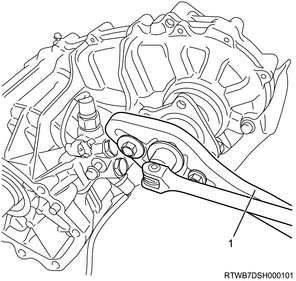
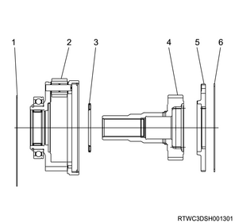
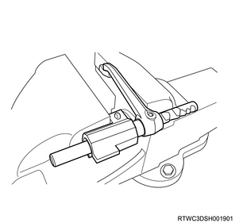
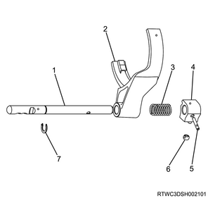

Transfer assembly disassembly (All models)
1. Stone guard removal
1. Remove the stone guard from the transfer case.
2. Speedometer driven gear removal
1. Remove the speedometer driven gear from the transfer case.
Note
- For models without ABS
- Remove the speedometer bushing, plate, and speedometer driven gear.
3. 2WD-4WD actuator removal
1. Remove the breather hose from the actuator.
Note
- Remove the hose between the transfer case and the transfer actuator assembly.
2. Remove the 2WD-4WD actuator from the rear transfer cover.
Note
- Disconnect the actuator.
4. 2-4 switch removal
1. Remove the 2-4 switch from the transfer case.
Note
- Remove the switch bracket.
- Remove the 2-4 switch that has a gray-colored harness cover.
5. Neutral switch removal
1. Remove the neutral switch from the transfer case.
Note
- Remove the neutral switch that has a brown-colored harness cover.
6. Detent plug removal
1. Remove the detent plug from the transfer case.
Note
- Remove the 2 detent plugs, 2 detent springs, and 2 detent balls.
7. Front companion flange removal
1. Remove the front companion flange from the output shaft using special tool.

SST: 5-8840-0133-0（J-8614-11） - flange holder
Note
- Remove the front companion flange end nut and remove the flange.

- Flange holder
2. Remove the O-ring from the output shaft.
8. Rear transfer cover removal
1. Remove the rear transfer cover from the transfer case.
Note
- Tap the head of front output shaft and the area around the rear cover bolt hole using a plastic hammer to remove a rear cover.
2. Remove the H-L sleeve from the output shaft.
3. Remove H-L shift assembly from the rear transfer cover.
Note
- The following applies to models with ABS.
4. Remove the plug from the rear transfer cover.
9. 2-4 sleeve removal
1. Remove the 2-4 sleeve from the output shaft.
Note
- Remove the 2-4 sleeve, the synchronizer key, and the front synchronizer spring.
- Do not remove the rear spring.
10. 2-4 shift assembly removal
1. Remove the 2-4 shift assembly from the rear transfer cover.
11. Shift drum removal
1. Remove the shift drum from the rear transfer cover.
Note
- Remove the shift drum and the shift drum shaft.
12. Needle bearing removal
1. Remove the needle bearing from the output shaft.
Note
- Remove the sum gear needle bearing.
- Sun gear needle bearing
- H-L sleeve
- 2-4 sleeve, synchronizer key, front synchronizer spring
- 2-4 shift assembly
- Shift drum shaft
- H-L shift assembly
- Shift drum
13. Main shaft removal
1. Remove the main shaft from the rear transfer cover.
Note
- Remove the fixing bolts for the oil pump strainer.
- Compress the retaining ring behind the chain.
- Tap the rear end of the main shaft using a plastic hammer, and remove the main shaft, transfer chain, and the front output shaft assembly from the rear cover.
Caution
- Be careful not to damage the oil pump strainer.
14. Main shaft disassembly
1. Disassemble the main shaft.
Note
- Remove the transfer chain and the front output shaft from the main shaft.
- Remove the main shaft snap ring.
- Remove the speedometer drive gear, the ball bearing, the retaining ring, and the oil pump assembly.
- Remove the sprocket snap ring.
- Remove the thrust washer, drive sprocket, inside ring, outside ring, block ring, and rear synchronizer spring.
- Rear synchronizer spring
- Block ring
- Outside ring
- Inside ring
- Drive sprocket
- Transfer chain
- Front output shaft
- Thrust washer
- Sprocket snap ring
- Oil pump assembly
- Oil pump retaining ring
- Retaining ring
- Ball bearing
- Speedometer drive gear
- Main shaft snap ring
2. Remove the snap ring from the main shaft.
Note
- Remove the 2-4 hub from the main shaft using a press.

Note
- Widen edge of the retaining ring as lightly tapping the sun gear input shaft end.
- Remove the carrier and the gear assembly from the input shaft.
- Retaining ring
Note
- Remove the dog-teeth snap rings from the carrier and the gear assembly.
- Remove the planetary dog-teeth and the sun gear input shaft together with the thrust needle bearing.

- Outer retaining ring
- Carrier and gear assembly
- Thrust needle bearing
- Sun gear input shaft
- Planetary dog-teeth
- Dog-teeth snap ring
Note
- Remove the carrier snap ring.

- Carrier snap ring
Note
- Remove the ball bearing using a press.
3. Remove the needle bearing from the gear assembly using special tool.
Note
- Remove from the carrier and the center of gear assembly.
SST: 5-8840-0084-0 - sliding hammer

SST: 5-8840-0027-0 - remover
- Sliding hammer
- Remover
Note
- Remove the spiral-type retaining ring together with the internal gear and the damper ring.

- Damper ring
- Internal gear
- Retaining ring
15. Output shaft disassembly
1. Remove the front output shaft ball bearing from the output shaft using a press.
Note
- Remove the snap ring.
- Remove the oil pump wire snap ring from the rear cover.
2. Remove the needle bearing from the front output shaft using special tool.
SST: 5-8840-0084-0 - sliding hammer
SST: 5-8840-2788-0 - bearing remover
- Sliding hammer
- Bearing remover
16. Shift rod hole plug removal
1. Remove the shift rod hole plug from the rear transfer cover.

17. H-L shift assembly disassembly
1. Disassemble H-L shift assembly.

- Shift arm
- Shift block
- Inner retaining ring
- Front collar
- Shift block spring
- Rear collar
- Shift rod
- Outer snap ring
- Guide roller
- Spring pin
Note
- Remove the guide roller.
- Compress the H-L shift spring by using the vise.

Note
- Remove the outer snap spring.
2. Remove the shift block from the shift rod.

Note
- Compress the spring inside the shift block using the socket and the vise.
- Remove the inner retaining ring.
- Remove the rear side collar.
- Remove the shift block spring.
- Remove the front side collar.
- Remove the shift block.
- Remove the spring pin.
- Remove the shift arm.
18. 2-4 shift assembly disassembly
1. Disassemble the 2-4 shift assembly.

- Shift rod
- Shift arm
- Spring
- Shift block
- Spring pin
- Guide roller
- Snap ring
Note
- Remove the guide roller.
- Remove the snap ring by compressing the spring.
- Remove the shift arm.
- Remove the spring.
- Remove the spring pin.
- Remove the shift block.
- Remove the shift rod.
19. Oil pump removal
1. Disassemble the oil pump.
Note
- Remove the clamp that holds the screen.
- Remove the screen.
- Remove the clamp that holds the hose.
- Remove the hose.
Caution
- Do not disassemble it to maintain and protect the function of oil pump.

- Oil pump assembly
- Clamp
- Hose
- Screen assembly